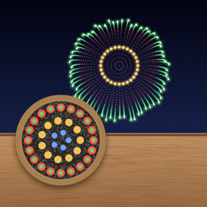

星をつめる花火
玉に星をつめて、夜空に上げる
花火の玉を半分に割った断面に星を並べて、自分の花火を作る iPhone と iPad のアプリです。作った玉を時刻の帯に並べて、打ち上げ番組として夜空に上げられます。
- 玉の大きさ（3号〜10号）と、星の輪（外の輪・芯・八重芯）をえらびます
- 輪ごとに、色・途中で変わる色・星の種類（牡丹・菊・柳・冠・千輪・点滅）・星の数をえらべます
- 星が空気でおそくなり、重さで垂れ、燃える時間で色が変わる動きを計算して描きます
- 型物：断面のますをなぞって星を置くと、その形が、そのまま空で大きく開きます（ハート・土星などの見本つき）
- 試し打ちで、開く高さ・大きさ・光る時間を見られます
- 打ち上げ番組：左・中・右の3つの列に玉を置き、高さ・同時に何発・連発（スターマイン）をえらびます
- 夜空と川と町の灯りの上に、ヒュ〜・ドン・パラパラの音つきで上映します。横向きの画面にもなります
- 作った玉は、数の上限なしで、いつでも好きなだけ上げられます。登録はいりません。作ったものは端末の中だけに保存します。課金はありません
花火の見え方を楽しむアプリです。火薬の作り方は書いていません。